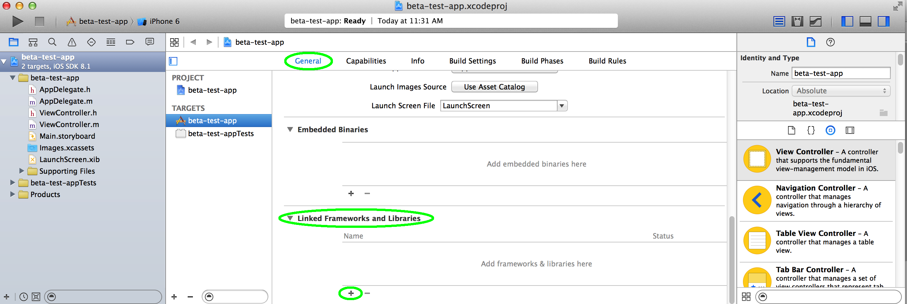
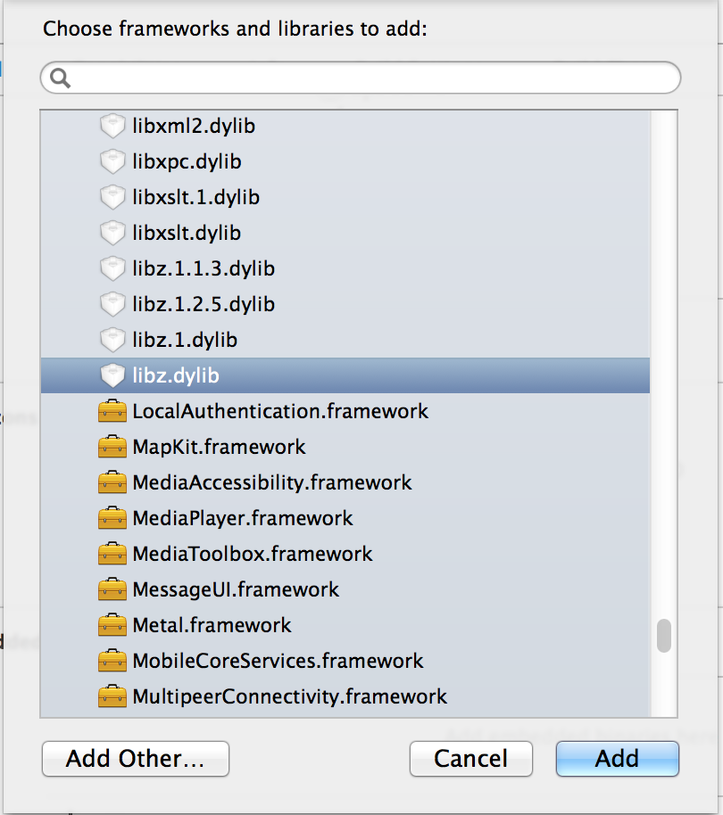
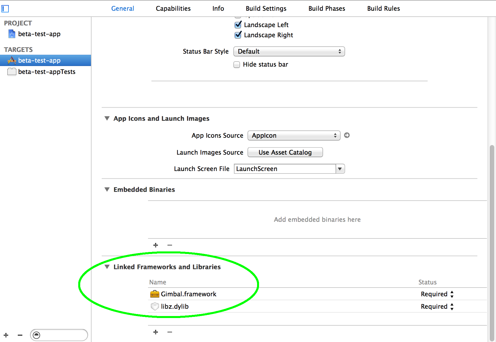
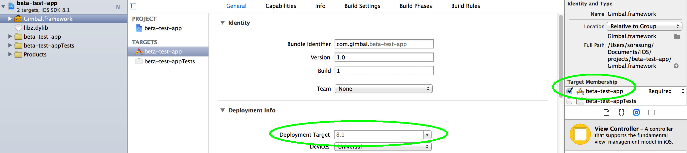
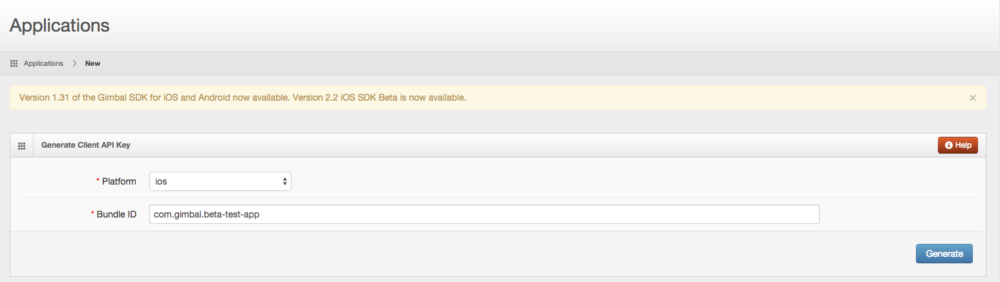
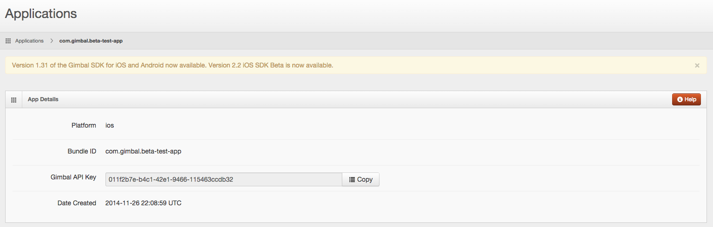
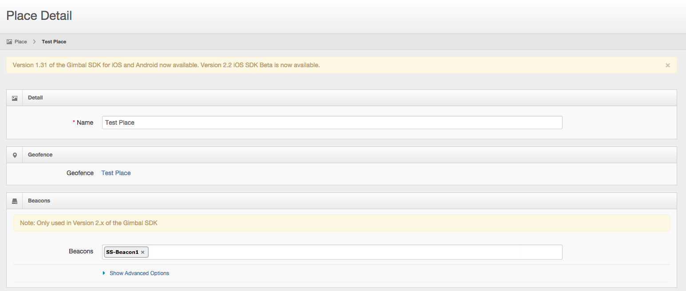
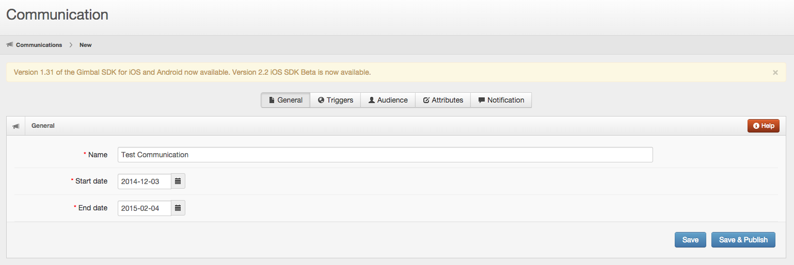

The version 2 API of the iOS SDK offers a number of enhancements and features that simplifies the use of the SDK. This guide will provide examples for each of the available functions in our iOS SDK along with a step by step guide on how to create a gimbal sdk enabled application.
If this is your first time working with the Proximity Framework visit the Proximity Overview »
Places Version 2 API introduces the concept of places. A Place can be represented by a single geofence and/or a series of beacons. Thus, when you create a Place in Gimbal Manager you can draw a geofence and/or choose a set of beacons to define the Place. Gimbal Analytics in v2 will be generated at place level. As a developer, you would add Communications or other triggers to occur on a Place Entry or Exit.
The following steps will set up an application in Xcode ready for enabling Gimbal features.
Make sure you are:
In Xcode choose File > New > Project and create a new Application
Please select the appropriate target from the list in the left column of the project editor
To add iOS Libraries, please select the General tab from the project editor. Then in the Linked Frameworks and Libraries, select + to add add new items

From the popup Choose frameworks and libraries to add: Select libz.dylib and press Add

Important Right click the Project name and choose the "Add files to ..." option to add the framework.
Note You will find this framework in the
Frameworks folder inside the Gimbal SDK zip file.
Please select the checkbox for Copy items if needed.
It is strongly recommended to add the Gimbal Framework using this method to ensure that the Target Membership checkbox is enabled properly. If an alternate method is used, then the Target Membership of the frameworks must be verified and checked.
The 'Linked Frameworks and Libraries' in your General tab should now look like this:

Verify that the Gimbal Framework Target Membership checkbox is set. Also verify that your Deployment Target matches the iOS version of your device.
Gimbal SDK for iOS uses both Significant Location Change and Region Monitoring features of the iOS. In order to allow for this, an entry 'NSLocationAlwaysUsageDescription' is required. In the Info.plist file located in the 'Supporting Files' folder, add a new entry with key 'NSLocationAlwaysUsageDescription'. The value should contain a user visible string describing the app’s need for the “always” location permission.
Note Across all documentation and SDKs the terms 'Beacon' and 'Transmitter' are interchangeable
Create Your Gimbal Application in the Gimbal Manager.
You will be presented with a form where you will select the iOS platform and enter a bundle ID.
Note This is where you would enter the Xcode application Bundle ID created in the previous section 'Create Your iOS Application'
Hit the 'Generate' button. Once finished, your app will have a Gimbal API Key.

Important You will need to set the API Key in your Xcode App
You will be presented with a form where you will enter information about your Place. A Place represents both Geofence and Proximity. For example, a place can be represented by a geofence (circular or polygonal) or a series of beacons.
Please enter your Place information. For example, you can enter a Place name and enter your activated beacon(s). You can always update your Place by adding a Geofence or add/delete your beacons.
Note This is where you would enter the Place(s) where you will look for Place Events in your app.
You will be presented with a form where you will enter information about your communication. For example a Communication can be entered for a place and when an app enters the specified place, a notification will be received. Please select 'Save & Publish' to activate your communication.

There are a number of application settings that you can configure. These can can be found by clicking on the Application’s Bundle ID / Package Name within Gimbal Manager.
The following settings control how place events are triggered. Note: any of the similar settings you set for a Place take precedence over these app-wide settings.
The 'Arrival RSSI' setting allows you to specify a specific RSSI (signal strength) to be used in determining if a beacon sighting should be processed as an arrival to a beacon. Signals weaker than 'Arrival RSSI' will be ignored.
Default = null, such that whenever a beacon is first detected it will cause a sighting and an arrival.
You may wish to modify this value if you wish to decrease the range of when a beacon trigger an arrival.
The 'Departure RSSI' setting allows you to specify a specific RSSI (signal strength) to be used in determining if a beacon sighting should be processed as a departure. Signals weaker than 'Departure RSSI' will be ignored.
Note that the Departure RSSI must be at least 10dBm lower than the 'Arrival RSSI'. This is done to avoid excessive bouncing (where arrival and departures events are triggered repeatedly, even when both the mobile device and beacon are standing still).
The ‘Departure interval’ is the number of seconds that must elapse where the SDK does not see a beacon RSSI level stronger than the Departure RSSI before processing the departure.
The smoothing algorithm processes RSSI signal strengths from sightings to make them less jumpy. The larger the smoothing window the more steady the output RSSI readings will be.
These settings allow you to turn specific features on/off.
Allows you to turn on/off geofencing monitoring.
This may be desired if your application only uses beacon-based places.
Allows you to turn off beacon monitoring. This will affect both beacon-based Place detection and beacon detection.
This may be useful if your application only uses geofence-based places.
Allows you to turn on/off Communicate delivery.
This may be useful if your application does not use the Communicate feature.
Allows you to turn on/off management of advertisement identifier changes on the device. This functionality is off by default. If you want to enable the advertisement identifier tracking in your iOS application you will need to import the AdSupport Framework.
This may be useful if your application does not have advertising permissions.
The configuration for communication limit frequency can be found in the 'Communicate' tab then the 'Triggers' section in Gimbal Manager.
The following settings sets the limit frequency when triggering communications using place events.
Setting the 'Limit Frequency' to 'Yes' displays options for setting the frequency interval.
The 'Only Deliver Once Every' setting allows you to specify the value in hours, days or weeks for the communication frequency. Please note, one day specifies a 24hr period. One week specifies a 168hr period. For example, if the frequency limit is set for one day, then a user who initially receives a communication at 4pm won't get that same communication until after that 24hr period, no matter how often the user comes back in and out of the triggering place.
This call sets the API key for your Gimbal application. When you register an application on the Developer Portal the API key is generated and supplied to you.
This was done in the previous section Create Gimbal Application.
#import <Gimbal/Gimbal.h>
...
[Gimbal setAPIKey:@"PUT_YOUR_GIMBAL_API_KEY_HERE" options:nil];
Note You can add this code in your AppDelegate implementation (.m) file in the didFinishLaunchingWithOptions: method, inserting your specific API Key
The PlaceManager defines the interface for delivering place entry and exits events to your Gimbal SDK enabled application. You use an instance of this class to start or stop place monitoring and to check whether monitoring is enabled.
Check if place monitoring has started
#import <Gimbal/Gimbal.h>
...
[GMBLPlaceManager isMonitoring];
Starts the generation of events based on the users location and proximity to geofences and beacons.
#import <Gimbal/Gimbal.h>
...
[GMBLPlaceManager startMonitoring];
Stops the generation of events based on the users location and proximity to geofences and beacons.
#import <Gimbal/Gimbal.h>
...
[GMBLPlaceManager stopMonitoring];
This call dissociate a device and data (place events) reported by the application running on that device. The open place sightings gets closed on server. Data on device also gets cleared due to this API invocation.
#import <Gimbal/Gimbal.h>
...
[Gimbal resetApplicationInstanceIdentifier];
This call creates a placeManager object and will trigger the callback to your
delegate of place events. Using this call, you will be notified of
events for places your application is authorized for.
#import <Gimbal/Gimbal.h>
...
@property (nonatomic) GMBLPlaceManager *placeManager;
...
self.placeManager = [GMBLPlaceManager new];
self.placeManager.delegate = self;
[GMBLPlaceManager startMonitoring];
Note Be sure to add the PlaceManager Delegate protocol to your class.
This is the callback delegate for place events.
Note You must add the <GMBLPlaceManagerDelegate>
protocol to your class.
The following callbacks will be invoked when a place event occurs.
#import <Gimbal/Gimbal.h>
...
- (void)placeManager:(GMBLPlaceManager *)manager didBeginVisit:(GMBLVisit *)visit
{
// this will be invoked when a place is entered
}
- (void)placeManager:(GMBLPlaceManager *)manager didEndVisit:(GMBLVisit *)visit
{
// this will be invoked when a place is exited
}
The GMBLVisit class defines a visit to a place. It includes the place, the arrival date and the departure date to the place. If the visit is currently on-going, the departure date will be nil.
| Property Name | Type | Description |
|---|---|---|
| arrivalDate | NSDate | Arrival date for the visit |
| departureDate | NSDate | Departure date for the visit |
| place | GMBLPlace | Place associated with visit |
The GMBLPlace class defines a place which is represented by a geofence (circular or polygonal) or a series of beacons. A place is defined in the Gimbal Manager portal.
| Property Name | Type | Description |
|---|---|---|
| identifier | NSString | Unique identifier for this place |
| name | NSString | Name assigned to this place |
| attributes | GMBLAttributes | Attributes of this place |
This call creates a communicationManager object and will trigger the callback to your
delegate of communications. Using this call, you will be notified of
communications for places your application is authorized for.
Note By default Gimbal Place Events will be presented as UILocalNotifications if the GMBLCommunicationManager is initialized. You can change this behavior by using the GMBLCommunicationManagerDelegate
#import <Gimbal/Gimbal.h>
...
@property (nonatomic) GMBLCommunicationManager *communicationManager;
...
self.communicationManager = [GMBLCommunicationManager new];
self.communicationManager.delegate = self;
[GMBLCommunicationManager startReceivingCommunications];
Note Be sure to add the CommunicationManager Delegate protocol to your class.
This call parses a GMBLCommunication from a UILocalNotification. When a Gimbal Place Event generates a UILocalNotification and the user clicks on it you can use this call to parse out the Gimbal Communication.
#import <Gimbal/Gimbal.h>
...
GMBLCommunication *communication = [GMBLCommunicationManager communicationForLocalNotification:notification];
This call parses a GMBLCommunication from a Remote Notification. When a remote notification is generated by the Gimbal Manager and the user clicks on it you can use this call to parse out the Gimbal Communication.
#import <Gimbal/Gimbal.h>
...
GMBLCommunication *communication = [GMBLCommunicationManager communicationForRemoteNotification:userInfo];
This is the callback delegate for communication notifications.
Note You must add the <GMBLCommunicationManagerDelegate>
protocol to your class.
The following callback will be invoked when a place communication event occurs. The callback provides the opportunity to filter which communications will be presented as local notifications.
#import <Gimbal/Gimbal.h>
...
- (NSArray *)communicationManager:(GMBLCommunicationManager *)manager
presentLocalNotificatinsForCommunications:(NSArray *)communications
forVisit:(GMBLVisit *)visit
{
// This will be invoked when a user has a communication for the place that was entered or exited.
// Return an array of communications you would like presented as local notifications.
}
The GMBLVisit class defines a visit to a place. It includes the place, the arrival date and the departure date to the place. If the visit is currently on-going, the departure date will be nil.
| Property Name | Type | Description |
|---|---|---|
| arrivalDate | NSDate | Arrival date for the visit |
| departureDate | NSDate | Departure date for the visit |
| place | GMBLPlace | Place associated with visit |
The GMBLPlace class defines a place which is represented by a geofence (circular or polygonal) or a series of beacons. A place is defined in the Gimbal Manager portal.
| Property Name | Type | Description |
|---|---|---|
| identifier | NSString | Unique identifier for this place |
| name | NSString | Name assigned to this place |
| attributes | GMBLAttributes | Attributes of this place |
The GMBLCommunication class defines a communication that was defined on the Gimbal Manager Portal.
| Property Name | Type | Description |
|---|---|---|
| identifier | NSString | Unique identifier for this communication |
| title | NSString | Title for this communication |
| descriptionText | NSString | Description for this communication |
| URL | NSString | URL for this communication |
| expiry date | NSDate | Expiry date for this communication |
| attributes | GMBLAttributes | Attributes of this communication |
This call creates a beaconManager object and assigns the delegate class.
#import <Gimbal/Gimbal.h>
...
@property (nonatomic) GMBLBeaconManager *beaconManager;
...
self.beaconManager = [GMBLBeaconManager new];
self.beaconManager.delegate = self;
Note Be sure to add the BeaconManager Delegate protocol to your class.
Starts listening to beacon sighting which would generate events based on the users proximity to beacons. You will be notified of sightings for beacons your application is authorized for.
#import <Gimbal/Gimbal.h>
...
[self.beaconManager startListening];
Stops listening to beacon sightings which would generate events based on the users proximity to beacons.
#import <Gimbal/Gimbal.h>
...
[beaconManager stopListening];
This is the callback delegate for beacon manager.
Note You must add the <GMBLBeaconManagerDelegate>
protocol to your class.
The following callbacks will be invoked when a beacon sighting occurs.
#import <Gimbal/Gimbal.h>
...
- (void)beaconManager:(GMBLBeaconManager *)manager didReceiveBeaconSighting:(GMBLBeaconSighting *)sighting
{
//This will be invoked when a user sights a beacon
}
The GMBLBeaconSighting class defines a beacon sighting.
| Property Name | Type | Description |
|---|---|---|
| RSSI | NSInteger | The rssi value for the beacon sighted |
| date | NSDate | The field representing the beacon sighted date |
| beacon | GMBLBeacon | The beacon object with beacon attributes |
The GMBLBeacon class defines a beacon that was defined on the Gimbal Manager Portal.
| Property Name | Type | Description |
|---|---|---|
| identifier | NSString | A unique string identifier (factory id) |
| name | NSString | The name for the GMBLBeacon that can be assigned via the Gimbal Manager |
| iconURL | NSString | The iconUrl |
| batteryLevel | GMBLBatteryLevel | The battery level |
| temperature | NSInteger | The ambient temperature surrounding the Beacon in Fahrenheit. The value will be NSIntegerMax if no temperature reading is available for this beacon |
We strongly recomend you utilize the Version 2 APIs as we will no longer continue to add new features in the Version 1 APIs. If you have previously used the Version 1 APIs, switching to Version 2 APIs are easy, all you need to do is to simply start using the Version 2 API.
Here are some major changes you should take note of:
For information on default beacon configurations and how to assign and push a configuration, please refer to the link provided
To properly receive Gimbal Proximity events in the background your application needs to enable the following iOS background modes.
bluetooth-centralIn the foreground your application should be notified for most Gimbal Proximity Events that originate from a beacon. In the background this is not the case. In the background the device receives Bluetooth LE events much less frequently.
The following table shows how long it takes to receive an Arrive event from our VisitManager
based on the testing we've done on devices running different iOS versions.
| Beacon Transmit Rate | Average Time to Arrival | Standard Deviation |
|---|---|---|
| 100 milliseconds | 7 seconds | 10 seconds |
| 645 milliseconds | 15 seconds | 6 seconds |
| Beacon Transmit Rate | Average Time to Arrival | Standard Deviation |
|---|---|---|
| 100 milliseconds | 20 seconds | 11 seconds |
| 645 milliseconds | 85 seconds | 59 seconds |